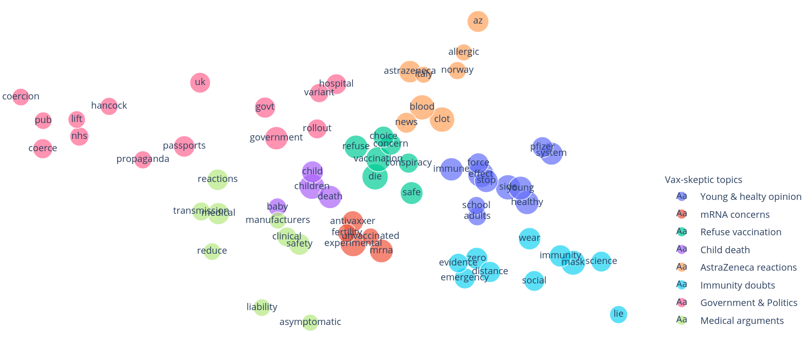
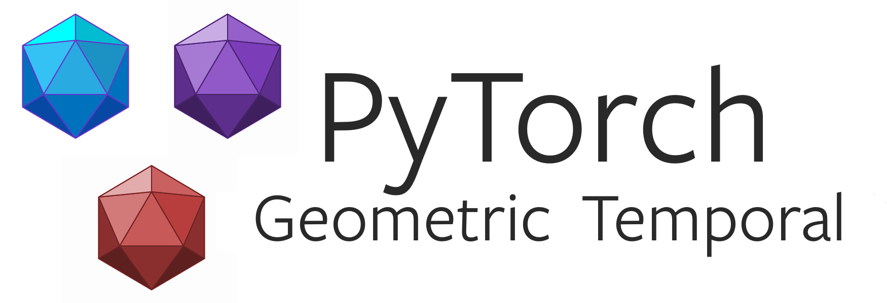
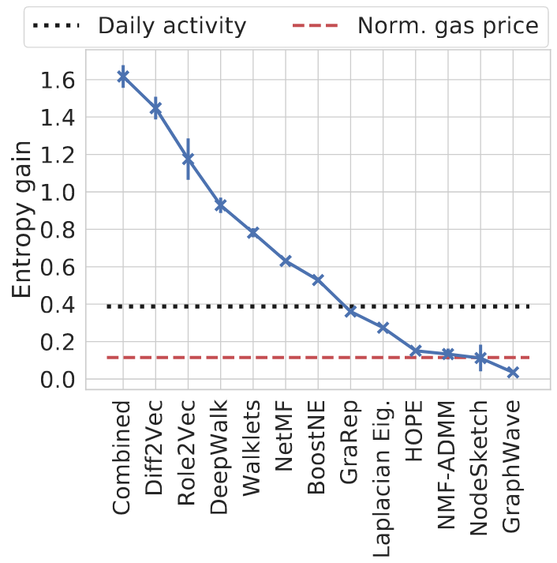
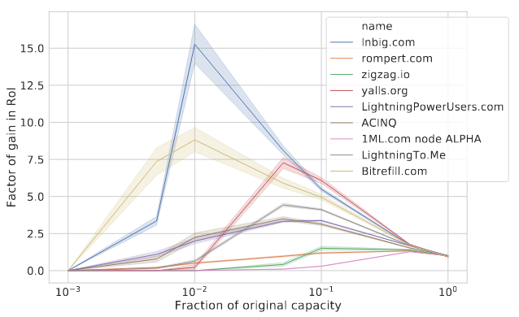
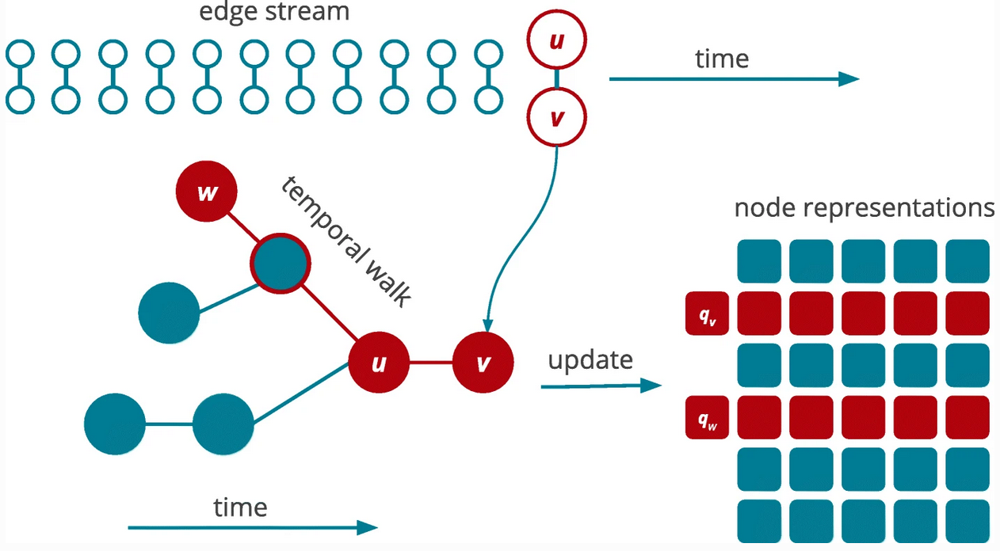
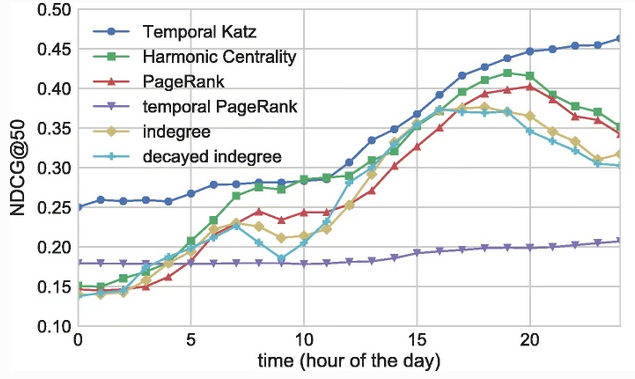

My research interests focus on, but not limited to network embeddings, temporally evolving social and cryptocurrency networks, and machine learning.
I am currently a PhD student in the Faculty of Informatics at Eötvös University, starting 2016.
Since 2014, I work as a Data Scientist at the Hungarian Institute for Computer Science and Control.
In my free time, I am usually having fun with my children but I also like playing volleyball or hiking.
In August 2022, I submitted my PhD thesis on mining social and cryptocurrency networks.
My public PhD defense is due on 30 January 2023. Find the links to my thesis and booklets below.
Feel free to contact me if you are interested in my research.
Publications

Vaccine skepticism detection by network embedding. [extended abstract]
Ferenc Beres, Rita Csoma, Tamas Vilmos Michaletzky, and Andras A. Benczur

PyTorch Geometric Temporal: Spatiotemporal Signal Processing with Neural Machine Learning Models. [paper]
Benedek Rozemberczki, Paul Scherer, Yixuan He, George Panagopoulos, Maria Astefanoaei, Oliver Kiss, Ferenc Beres, Nicolas Collignon, Rik Sarkar

Blockchain is Watching You: Profiling and Deanonymizing Ethereum Users. [paper]
Ferenc Beres, Istvan A. Seres, Andras A. Benczur, Mikerah Quintyne-Collins

A Cryptoeconomic Traffic Analysis of Bitcoin’s Lightning Network. [paper]
Ferenc Beres, Istvan A. Seres, Andras A. Benczur

Node embeddings in dynamic graphs. [paper]
Ferenc Beres, Domokos M. Kelen, Robert Palovics & Andras A. Benczúr

Temporal walk based centrality metric for graph streams. [paper]
Ferenc Beres, Robert Palovics, Anna Olah & Andras A. Benczur
What's new
2023
January
- My public PhD defense is due on 30 January. Find my thesis and booklet by following the links.
2022
August
- I submitted my PhD thesis on mining social and cryptocurrency networks.
July
- We received an academic grant from the Ethereum Foundation to design, implement and evaluate a privacy-enhanced routing algorithm for the Ethereum network.
2021
September
- One work was accepted at Complex Networks 2021. We release the related Twitter data and source code on GitHub.
- I started to work with two applied mathematician students on their school project: Social network mining in data-intensive applications.
August
- I presented a paper at the DAPPS 2021 conference.
- One paper was accepted at CIKM 2021 (Proceedings of the 30th ACM International Conference on Information and Knowledge Management).
June
- One paper was accepted at DAPPS 2021 (International Conference on Decentralized Applications and Infrastructures.
January
- I started to collect Twitter data related to COVID-19 vaccination. Our goal is to monitor the online sentiment related to major vaccines. Later, we plan to discover anti-vaxxer user clusters with network embedding.
2020
August
- I started to collect geotagged tweets related to trekking, hiking, or mountaineering. We intend to track users over multiple trekking sites and trails. We are also interested in trekking behavior changes related to Covid-19.
May
- Published a preprint where we study the privacy implication of Ethereum's account-based model. In the cryptocurrency domain, we are the first to deploy node embeddings to profile and deanonymize Ethereum Users.
2019
August
- A journal paper was published where we propose multiple node embedding models for dynamic graphs.
July
- My company enrolled me in the DeepLearn 2019 Summer School. Thank you for the opportunity to educate myself on neural network architectures!
January
- We achieved 10th prize on the WSDMCup 2019. We published our solution in a paper: Sequential skip prediction using deep learning and ensembles.
Get In Touch
If you are interested in my work, feel free to get in touch with me!
{kind=link}
{kind=link}
{kind=link}
{kind=link}
{kind=link}
{kind=link}